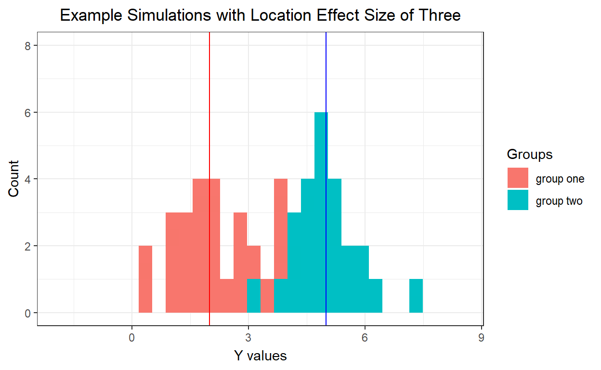

A short description of the post.
I found it discouraging that a power analysis for a multinomial multiple logistic regression wasnt readily accessible/available in the same vein as one could use the technique. Eventually I started to grasp why it might be difficult to distill the complexity of a dataset to a few much less one formula for a sample size.
This led me to favor simulations. Okay everything in stats is a simulation but that itself wasnt evident to me for quite some time until I started diving into the Bayesian methods with respect to posterior predictive checks.
This is first a proof of exercise, hopefully one that will generalize to any form of modeling exercise one could undertake for determining sample sizes/power as well as add to my capacity for performing simulations. As modeling becomes more complex such as with hierarchical models, simulations become inevitable so this is also me setting the ground work.
A Power/Sample Size analysis forces you to become intimate with your expectations from data, to consider many possible analyses, while also serving as management tool for providing information for cost analysis and interim analysis (such as for clinical trials which I hope to make a general use case of). Simulations extend this capability by allowing you to include many additional variables while being able to vary the relationships you between these variables. You would not have to depend on sourcing prepackaged code for power/sample size calculations when considering different analysis as you are in full control of the data generating mechanism; you only need what may already be available to you in terms of the models you expect to run. and also hardware specs that wont deplete your patience.
Basically you create datasets, and perform the analysis you expect to do. This data generation process is guided by the knowledge sourced from your literature review so it is imperative you examine the results in detail to understand what kinds of datasets you may encounter.
You simulate thousands of datasets and check how well a particular sample size will capture an effect youre either interested in or one you think exists.

The above animation should give an easy enough view of data generation. The data is that from two Normal Distributions that have the same variance but their mode of central tendency are typically three units apart. Now that we are able to simulate datasets, now comes the application of whatever analysis you have in mind. For our purposes a regression approach is used (brms package in R) utilizing the defaults for Bayesian estimation.
For these problems I make use of the ability to explicitly model the variances instead of using a pooled estimate of some kind (heterogeneous regression modeling). Even though I know that the variances are the same for the above animations, this will set the trend for the upcoming problems for dealing with unequal variances.
An example of the model output is as such:
| y | ||
|---|---|---|
| Predictors | Estimates | CI (95%) |
| Intercept | 2.02 | 1.542.47 |
| sigma_Intercept | 0.15 | -0.100.47 |
| xgrouptwo | 4.64 | 4.005.27 |
| sigma_xgrouptwo | -0.11 | -0.520.32 |
| Observations | 50 | |
| R2 Bayes | 0.824 | |
We have two intercepts and two effect sizes. This is because there is one regression equation that models the mean of the normal distribution, and similarly there is another regression that models the variance of the normal distribution.
The variances are given on a log scale and must be exponentiated before we can interpret on the same scale as our data as shown below
| Estimate | Est.Error | CI.Lower | CI.Upper |
|---|---|---|---|
| 1.188 | 0.1808 | 0.907 | 1.598 |
| 1.069 | 0.1657 | 0.8019 | 1.454 |
The relevant information is extracted (mostly the quantiles of the posterior distribution of parameters) and then the entire process is repeated several times for any one sample size and also in our case for different group allocation schemes.
I am interested in the following:
The first problem we will consider is to determine a sample size that can recover the location and scale effects given below with a credible interval length of 0.7 for the precision. The difference in means is 0.5 magnitude with the variance between the two groups being the same but over varying group allocations (1-1,1-3,1-5).
\[ \mu_1 \sim N(2,1) \]
\[ \mu_2 \sim N(2.5,1) \]
\[ e \sim N(0,1) \]
\[ sigma ~ \gamma() \]
The first useful piece of information is that for the estimated difference in the means.
By hovering over a particular point we have access to more information about that particular sample size.
Almost all samples shown have the ability to include the location effect size a minimum of 0.8 proportion of the time across all allocations. It seems that you dont quite need to worry about detecting the effect though the uncertainty around the estimates can be so terrible as to make the estimate untrustworthy as can be seen by the wide credible intervals for the smaller sample sizes.
This is why we directly consider the length of the intervals. The criteria set for this simulation was that of 0.7 for the credible interval; the label of xgrouptwo_cover will show the proportion of times this criteria was satisfied. The 1-1 allocation first met this requirement for sample sizes 140 but was not able to maintain this for 0.8 proportion of the times until the sample size was 150 . For the 1-3 allocation these sample sizes were 188 and 200 respectively. For the 1-5 allocation the sample sizes were 246 and 246 respectively. Even though the length of the interval may be precise, what if it actually tends to occurs near values for which we dismiss the effect size as non-existent. This may not be of concern for larger effect sizes say those greater than 1, but as what you are trying to detect becomes smaller, the proximity to the zero value can become concerning. Of course bayesian estimation gives the probability of an interval around the zero value so this alleviates the concern to some extent. Even so this is a problem Ive noticed with some power analysis in that it gives the minimum sample size needed to reject the Null Hypothesis, for which in this case it would be the sample size needed to exclude zero from the interval. The problem is that zero isnt exactly that far from the interval when using that sample size, thus you would have to be extremely precise in your prediction of the true variability if you were to take that sample size at face value.
Therefore one might also consider for what sample size does the lower bound of the credible interval tend to be above a constant for example 0.1; for the 1-1 allocation this first occurs at 120 and it was not able to maintain this for 80% of the times until a sample size of 150 ;for 1-3 allocation this happened at sample sizes 140 and 208 respectively; for 1-5 allocation at 198 and 348 respectively.
The next informative parameter is that of the scale effect. It is important that this is captured well as this will decide whether your data is too noisy to even begin to interpret what you gathered. Remember that for this situation the variances are the same so we expect this scale effect parameter to be zero.
All samples shown have the ability to include the scaleeffect size a minimum of 0.7 proportion of the time across all allocations.
The length of the intervals. The criteria set for this simulation was that of 0.7 for the credible interval; the label of sigma_xgrouptwo_cover will show the proportion of times this criteria was satisfied. The 1-1,1-3 and 1-5 allocations met this requirement for sample sizes 60 , 80 , and 108 respectively.
Since this estimate is centered around zero, I let the length of the interval serve as the limit for upper and lower bounds of the estimate.
Thus in summary the following table details for each allocation the sample size requirements if we want the following to be satisfied at least 80% of the time:
location effect to be captured.
location effect credible interval to have a length less than 0.7
location effect credible interval lower bound to be above 0.1
scale effect credible interval to have a length of 0.7
| Allocation | Total Sample Size | Group One Sample Size | Group Two Sample Size |
|---|---|---|---|
| 1-1 | 150 | 75 | 75 |
| 1-3 | 208 | 52 | 156 |
| 1-5 | 348 | 58 | 290 |
Now we will consider a problem that deals with a larger location effect size but with the complication of unequal variances.
\[ \mu_1 \sim N(2,1) \]
\[ \mu_2 \sim N(2.5,2) \]
\[ e \sim N(0,1) \]
For this problem we will not be calculating the sample size requirements as you will see it would require simulations for total sample sizes that exceed 400. Instead we will compare how the gains over the allocations compare to each other across the different criteria.
The first criteria of selection will be the proportion of times we were able to detect the estimate. You may recall this went well for the first problem and there does not seem to be a poor performance in the plot below.
Not sure what to comment right now about this. Going to wait until I am able to run more simulations.
The next criteria is the length of the intervals. Immediately we can see that the 1-1 allocation is always performing worse for all sample sizes relative to the other allocations.
The 1-3 allocation seems to be performing slightly better than the 1-5 allocation across all sample sizes. This difference seems to decrease as the sample sizes increase. Overall it would be better to use the 1-3 allocation. Interestingly the variance for group two is three times that of group one and so the allocation that is based on the ratio of variability works best.
Although I will wait for more simulations to be run, it does seem like the 1-3 allocation seems to be higher in the proportion than most sample sizes when compared to the 1-1 allocation. It is not clear that what the pattern is for the 1-3 compared to the 1-5 allocation as these seem to have similar performance.
Here we see the same pattern as with the Location effect interval where the 1-1 allocation performed worse compared to the other allocations, and of the remainder the 1-3 allocation performed better.
The question we may have is whether the difference in interval length is enough to consider using one allocation to the other.
Going to wait until more sims come in
Going to wait until more sims come in
Finally we have a comparison of the credible interval length over the scale effect. That is how often was the 0.7 interval length satisfied for a particular sample size across allocations.
In conclusion for problem two, the unequal allocation serves to better estimate the parameters as the sample size increases. There is merit to allocation samples according to the ratio of variances between the groups with those that have a larger variance having more samples.
Simple Linear Regression
Linear Regression with both continuous and categorical variables both being random
Similar conclusions as for the location effect sizes seem to hold for the scale effect size.
This raises a question as to whether post hoc power/sample sizes should be carried out. Some places advise against this but the initial power analysis is carried out under fictional circumstances imagined by the analyst to be the best representations of expected reality. How then are they to know that once the data is collected the same envisioned situations cover the dataset that has materialized. Care has to be taken with the differences due to variances that are present among groups; are power analysis usually complex enough to cover situations where differences in variances require more data to establish effect sizes.